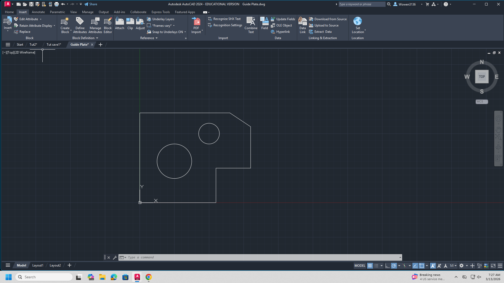

AutoCAD
What is AutoCAD
AutoCAD is a 2D drafting software used by engineers and designers. It is used to create technical drawings with exact measurements. In class we used it to practice making precise 2D designs.
SolidProfessor Certificate

Assignments



Reflection
AutoCAD was different from the 3D CAD software we used before. In 3D software you can rotate and view a model from any angle. In AutoCAD everything is flat and you have to think about dimensions differently. It took some getting used to but it helped me understand how 2D drawings relate to real parts.